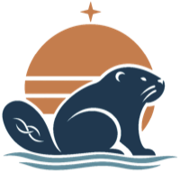

inquiredu.org
Choose which projects appear in the library, drag them into order, and edit their catalog cards. Nothing changes on the live site until you publish.
Drag the handle to reorder, or focus it and use the arrow keys. Changes save in this browser as you go.
Publishing saves projects.json to your Pages repository. GitHub needs a token that can write to that one repository.
inquiredu.github.io. GitHub's default, Public repositories, is read-only and can't publish.Already made a token that can't publish? Open your fine-grained tokens, choose it, click Edit, fix steps 2 and 3, and save. The token itself doesn't change, so you don't need to paste it again.
Without that box checked, the token stays in this tab only and is gone when you reload. Every project page under inquiredu.org shares this browser storage, so only remember it on a device you trust.
Copy this file and replace projects.json in the repository yourself. It always matches the list above.